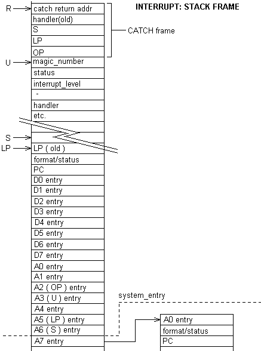

When you enter interrupt code you can use assembler if you desire. The following words set up the FORTH environment. If could be faster but we test that things are as expected on entry and again on exit.
The structure may seem large but remember we are building a forth process to deal with the interrupt. 
.S .( into interrupt_colon)
| _interrupt_end_user user_base - CONSTANT _#interrupt_user_size
| $100 CONSTANT _#interrupt_data_stack
\ there is no interrupt stack unless interrupt: is used. higher interrupts may use
\ your return stack.
| $100 CONSTANT _#interrupt_return_stack
Only used in interrupt routines
: @int_stack_frame ( --addr)
int_frame_pointer @
;
\ Should be set to stack_start_magic
\ If not the data stack has underflowed.
: _int_data_stack_start ( --addr)
@int_stack_frame
[
_#l_length
_#interrupt_user_size +
_#interrupt_data_stack + 4- ]T LITERAL +
;
These are stored in the interrupt routines data stack area, an area allocated by >interrupt:, remember stack starts at end and goes back.
\ DEND
| 44454E44 CONSTANT #stack_end_magic
\ DSTK
| 4453544B CONSTANT #stack_start_magic
The format code contains the vector of the exception. Using this we can give the excetion frame a name.
: .panic_level_frame ( addr --)
panic_cr
panic" interrupt: saved registers"
panic_cr
panic" D0 " _#l_D0 OVER + @ .panic BL panic_emit
panic" D1 " _#l_D1 OVER + @ .panic BL panic_emit
panic" D2 " _#l_D2 OVER + @ .panic BL panic_emit
panic" D3 " _#l_D3 OVER + @ .panic BL panic_emit
panic_cr
panic" D4 " _#l_D4 OVER + @ .panic BL panic_emit
panic" D5 " _#l_D5 OVER + @ .panic BL panic_emit
panic" D6 " _#l_D6 OVER + @ .panic BL panic_emit
panic" D7 " _#l_D7 OVER + @ .panic
panic_cr
panic" A0 " _#l_A0 OVER + @ .panic BL panic_emit
panic" A1 " _#l_A1 OVER + @ .panic BL panic_emit
panic" A2 " _#l_A2 OVER + @ .panic BL panic_emit
panic" A3 " _#l_A3 OVER + @ .panic
panic_cr
panic" A4 " _#l_A4 OVER + @ .panic BL panic_emit
panic" A5 " _#l_A5 OVER + @ .panic BL panic_emit
panic" A6 " _#l_A6 OVER + @ .panic BL panic_emit
panic" A7 " _#l_A7 OVER + @ .panic
panic_cr
panic" SR " _#l_format OVER + @ .panic BL panic_emit
panic" PC " _#l_PC OVER + @ .panic
DROP
;
: .panic_int_user ( addr n --)
panic_cr
panic" User area"
panic_dump
;
: .panic_r_stack ( addr n --)
panic_cr
panic" Return stack"
panic_dump
;
: .panic_s_stack ( addr n --)
panic_cr
panic" Data stack"
panic_dump
;
: .panic_int ( addr --)
DUP .panic_level_frame
DUP _#l_length + _#interrupt_user_size .panic_int_user
DUP [ _#l_length _#interrupt_user_size + ]T LITERAL + _#interrupt_data_stack .panic_s_stack
DUP [ _#l_length _#interrupt_user_size + _#interrupt_data_stack + ]T LITERAL + _#interrupt_return_stack .panic_r_stack
DROP
;
| : _interrupt_set_user ( r --)
DROP
\ loss of this value can be caused by data stack underflow
\ or return stack overflow.
#stack_start_magic \ has to be first item on data stack leave on stack
\ last cell in interrupt user area; data stack is after user
\ if not set on exit we have had problems.
#stack_end_magic data_guard !
xclock+ @ _task_restart_time !
@u DUP #activation_task> + !
@u _activation> !
zero 'buffer !
zero 'output_file !
zero 'input_file !
zero 'abort_file !
\ don't print messages on an abort.
zero _error_pos? W!
\ last location in user space; if not set at end of int then int stack overflow.
\ This sets things up so a THROW will bring us back here.
\ If you want a little extra speed you can get rid of
\ this, but the fault exception routines will work if this
\ is done.
R@
\ skip the BRA found in interrupt: just after the call to _interupt_set_user.
4+
\ the catch actually executes the interrupt code.
CATCH
panic" Interrupt code aborted" panic_cr
$panic
.panic_int
\ code following the code that called this is a branch to the ;interrupt
\ code
;
\ this is called from an interrupt code
\ address(--
\ A0
\ ---------------
CREATE _interrupt_entry assembler
D0 R -) MOV
\ data on return stack
\ D0 (--
\ call_address
\ A0
\ format
\ PC
\ ---------
\ A0 contains the interrupt: data address
_#l_active 0) D0 MOV
NE IF
' system_error3 AB JSR
R )+ D0 MOV
4 # R ADD
R )+ A0 MOV
RTE
THEN
\ save the MAC registers
\ note we leave A0 on the stack
ACC D0 MOV
D0 _#l_ACC 0) MOV
MASK D0 MOV
D0 _#l_MASK 0) MOV
MACSR D0 MOV
D0 _#l_MACSR 0) MOV
R )+ D0 MOV
D0 _#l_D0 0) MOV
D1 _#l_D1 0) MOV
D2 _#l_D2 0) MOV
D3 _#l_D3 0) MOV
D4 _#l_D4 0) MOV
D5 _#l_D5 0) MOV
D6 _#l_D6 0) MOV
D7 _#l_D7 0) MOV
A1 _#l_A1 0) MOV
A2 _#l_A2 0) MOV
A3 _#l_A3 0) MOV
A4 _#l_A4 0) MOV
A5 _#l_A5 0) MOV
A6 _#l_A6 0) MOV
\ this is the of the routine that called us,
\ removed to get the
\ stack frame back to _#lr state.
\ Has to be pushed onto interrupt routines
\ stack before exit from this word.
R )+ A1 MOV
A7 _#l_A7 0) MOV
_#lr_A0 R) _#l_A0 0) MOV
_#lr_format R) _#l_format 0) MOV
_#lr_PC R) _#l_PC 0) MOV
1 # _#l_count 0) ADD
TRUE # _#l_active 0) MOV
_#l_length 0) U LEA
A0 int_frame_pointer user_base - U) MOV
_#l_length _#interrupt_user_size + _#interrupt_data_stack + 0) S LEA
R S -) MOV
\ first data item is registers list on interrupt
_#l_length _#interrupt_user_size + _#interrupt_data_stack + _#interrupt_return_stack + 0) R LEA
\ call address onto new stack
A1 R -) MOV
' _interrupt_set_user AB JMP
HOST
forth : interrupt: ( --)
HOST CREATE
zero _%local_use !
\ disable interrups
46FC2700 t, \ 2700 # SR MOV
2F08 tw, \ A0 R -) MOV
207C tw,
ram_here t, \ ram_here # A0 MOV
_#l_length
_#interrupt_user_size +
_#interrupt_data_stack +
_#interrupt_return_stack + ram_allot
4EB9 tw,
_interrupt_entry t, \ _interrupt_entry JSR
\ _interrupt_set_user only exit to here if an abort,
\ this has to be a branch to the exit code.
\ It has to be 4 bytes long
6000 tw, \ ##code BRA
\ reserve space for address resolution and put values on stack that will
\ see the resolution done by code in ;intrerrupt
HERE 0 tw,
\ push check code onto stack at compile time
_#comp_code_if
\ start the forth compilation
]T
forth
;
HOST
: interrupt: ( --)
CREATE
zero _%local_use !
46FC2700 , \ 2700 # SR MOV \ 5474 still disables interrupts for first instruction
\ but tthe status register is now upppdated with the interrupt priority
\ ( as per the 68000). Left as is so code suppo0rts the 5407
2F08 W, \ A0 R -) MOV \ 5407 this goes onto the user stack, 5474 this goes onto the interrupt stack
207C W, \ this is the memory fot the tasks stack frame. Remebver this is a compiling word
\ the frame is allocated when the interrupt routine is created.
ram_here , \ ram_here # A0 MOV
_#l_length
_#interrupt_user_size +
_#interrupt_data_stack +
_#interrupt_return_stack + ram_allot
\ Branch to code that saves the machine state.
4EB9 W, \ _interrupt_entry JSR
_interrupt_entry ,
\ for the abort
6000 W, \ ##code BRA
HERE 0 W,
\ check code added for compile check.
_#comp_code_origin
\ start the forth compilation
]
;
\ panic message for interrupt overflow
: _int_stack_overflow
panic" interrupt data stack overflow"
@int_stack_frame .panic_int
;
\ panic message for interrupt underflow
: _int_stack_underflow
panic" interrupt data stack underflow"
@int_stack_frame .panic_int
;
\ done with interrupts disabled.
\ Checks that things are as they should be on interrupt exit
\ and indicated that we are finished by setting interrupt_magic_number to off value.
: _interrupt_ok? ( --)
\ the start of the stack and end should be preset values.
data_guard @ #stack_end_magic <> IF
_int_stack_overflow
THEN
_int_data_stack_start @ #stack_start_magic <> IF
_int_stack_underflow
THEN
;
CREATE _interrupt_exit assembler
$2700 # SR MOV
' _interrupt_ok? AB JSR
int_frame_pointer user_base - U) A0 MOV
\ the interrupt code can alter the return address
\ used for faults
_#l_A7 0) A1 MOV
_#l_PC 0) _#lr_PC 1) MOV
_#l_ACC 0) D0 MOV
D0 ACC MOV
_#l_MASK 0) D0 MOV
D0 MASK MOV
_#l_MACSR 0) D0 MOV
D0 MACSR MOV
_#l_D0 0) D0 MOV
_#l_D1 0) D1 MOV
_#l_D2 0) D2 MOV
_#l_D3 0) D3 MOV
_#l_D4 0) D4 MOV
_#l_D5 0) D5 MOV
_#l_D6 0) D6 MOV
_#l_D7 0) D7 MOV
_#l_A1 0) A1 MOV
_#l_A2 0) A2 MOV
_#l_A3 0) A3 MOV
_#l_A4 0) A4 MOV
_#l_A5 0) A5 MOV
_#l_A6 0) A6 MOV
_#l_A7 0) A7 MOV
FALSE # _#l_active 0) MOV
R )+ A0 MOV
\ note _system_rte expects a machine ready for a RTE
_system_rte AB JMP
HOST
forth : ;interrupt
HOST
\ stop the compiler
[COMPILE] [
\ resolve the interrupt: reference
_#comp_code_if
forth ?PAIR
HOST HERE
forth OVER - SWAP
HOST tw!
\ local variable exit code if required.
forth _%local_use @ IF
HOST
4E5D tw, \ ##code LP UNLK
target_previous
_end_xlocal_dictionary
forth THEN
HOST
4EF9 tw, \ _interrupt_exit JMP
_interrupt_exit t,
; TARGET
HOST
: ;interrupt
\ stop the compiler
[COMPILE] [
\ resolve the interrupt: reference
_#comp_code_origin ?pair
!forward
\ word exit code
\ We have to unlink LP if we used local variables as
\ we need th previous value of LP to get out of the interrupt
\ code.
_%local_use @ IF
4E5D W, \ ##code LP UNLK
PREVIOUS
_end_local_dictionary
THEN
4EF9 W, \ _interrupt_exit JMP
_interrupt_exit ,
; IMMEDIATE
.S .( out of interrupt:) send